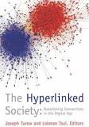

<div class="box">
  <article class="media enm-book">
    <div class="media-left">
      <figure class="image enm-thumbnail">
        
      </figure>
    </div>
    <div class="media-content">
      <h3 class="title is-5">
        The Hyperlinked Society: Questioning Connections in the Digital Age</h3>
      <div class="meta">Joseph Turow and Lokman Tsui; University of Michigan Press, 2008</div>
      <nav class="level is-mobile">
        <div class="level-right">
          <a class="button level-item is-primary is-outlined is-small">Open in Reader</a>
        </div>
      </nav>
    </div>
  </article>
</div>